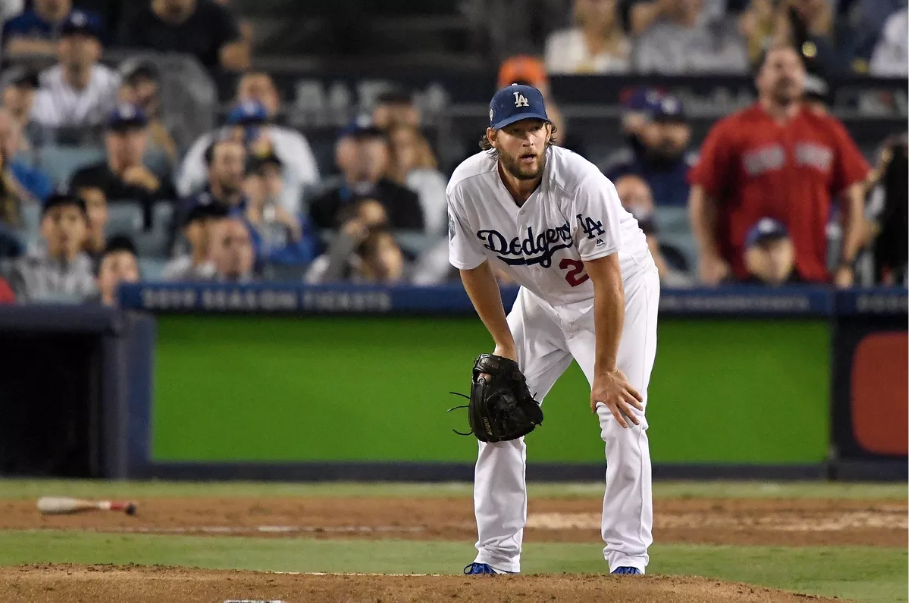

Clayton Kershaw: Playoff Choker?
He’s one of the most dominant pitchers of our generation, many would argue of all time. As an 8-time All Star, 3-time Cy Young Award Winner, and former MVP, Clayton Kershaw has cemented his place in Los Angeles Dodgers…